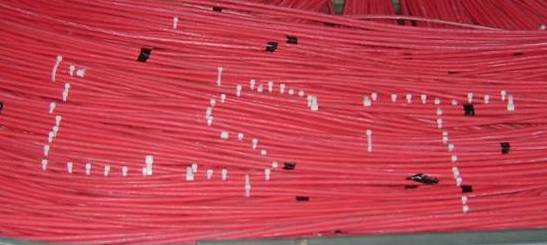
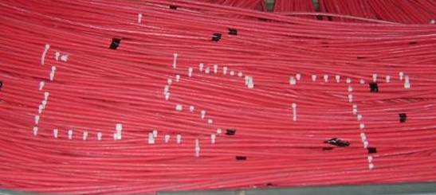

|  |
|
|
|  |
|
Main BaBar LST page
W. Menges, Proceedings of IEEE2005, physics/0609039
2006 Installation Gallery
(thumbnails)
Temperature & Humidity Sensors
Plateau curves taken during the 2006 installation
HV System - SLAC-PUB-12069
Iarocci Tubes
Return to the top, or back to my homepage.